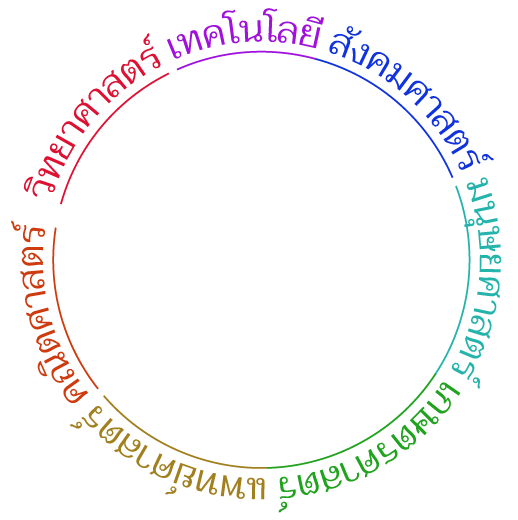
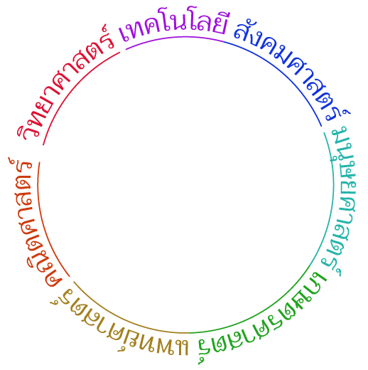

โครงการสารานุกรมไทยสำหรับเยาวชน เริ่มดำเนินงานเมื่อปี พ.ศ. ๒๕๑๑
โดยคณะกรรมการผู้ทรงคุณวุฒิในสาขาวิชาการต่างๆ เพื่อเป็นการสนองพระราชดำริ
ของพระบาทสมเด็จพระปรมินทรมหาภูมิพลอดุลยเดช
"หนังสือประเภทสารานุกรมนั้น บรรจุสรรพวิชาการอันเป็นสาระไว้ครบทุกแขนง
เมื่อมีความต้องการหรือพอใจจะเรียนรู้เรื่องใด ก็สามารถอ่านทราบโดยสะดวก
นับว่าเป็นหนังสือที่มีประโยชน์เกื้อกูลการศึกษาเพิ่มพูลปัญญาด้วยตนเอง
ของประชาชนอย่างสำคัญ โดยเฉพาะในยามที่มีปัญหาการขาดแคลนครู
และะที่เล่าเรียนเช่นขณะนี้ หนังสือสารานุกรมจะช่วยคลี่คลายให้บรรเทาเบาบางลงได้เป็นอย่างดี"
ขณะนี้มีออกมาแล้ว ๒๘ เล่ม โดยจัดแบ่งเนื้อหาของแต่ละเรื่องออกเป็นสามระดับ
เพื่อที่จะให้เยาวชนสามารถศึกษาค้นคว้าหาความรู้ได้ตามพื้นฐานของตน
ปัจจุบันโครงการฯ ได้จัดทำหนังสือสารานุกรมไทยที่บรรจุความรู้ใน ๗ สาขา คือ